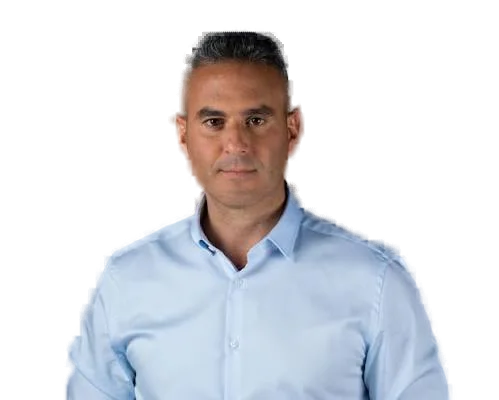
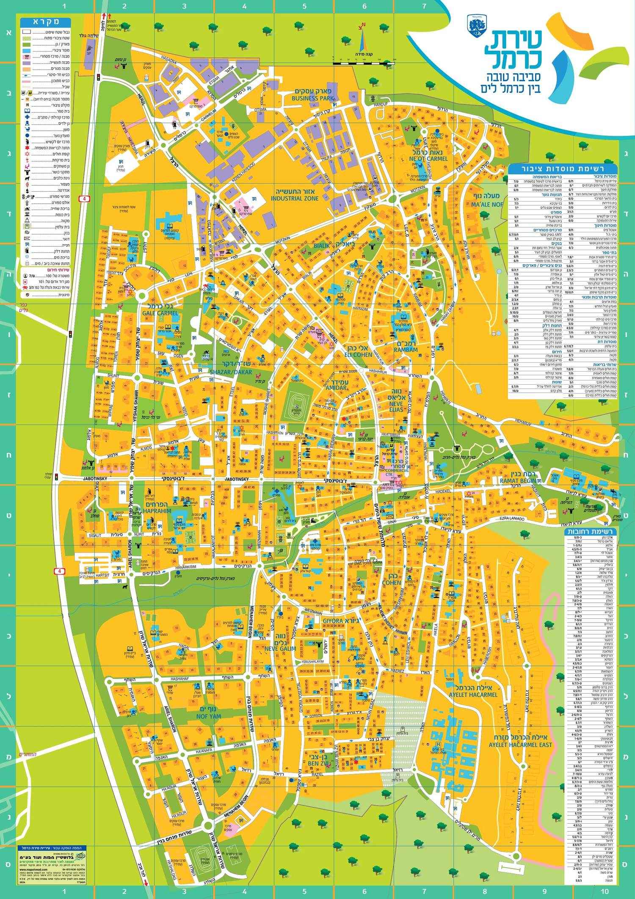

מהדורה מעודכנת · 2026
חוברת חירוםמוכנים יחד, מוגנים יחד
ההנחיות העדכניות של פיקוד העורף, 61 מרחבים מוגנים ציבוריים, מפה וסרטוני הסברה – לכל תושבת ותושב בטירת כרמל.

תושבות ותושבים יקרים,
השנה האחרונה הציבה בפני כולנו אתגרים שלא הכרנו. ובכל פעם מחדש, טירת כרמל הוכיחה מה היא באמת: שכנים שדופקים בדלת לוודא שכולם בסדר, מתנדבים שמגיעים בלי שקוראים להם, וצוותי עירייה שלא עוזבים את השטח.
אנחנו בעירייה למדנו מכל אירוע ושיפרנו. הרחבנו את מערך המיגון הציבורי ל-33 מקלטים ומחסות ו-28 מיגוניות, הוספנו מקלטים שנפתחים מרחוק, והכנו עבורכם את החוברת הזו – מעודכנת להנחיות פיקוד העורף, עם מפה וסרטונים שיעזרו לכם להכיר את המרחב המוגן הקרוב אליכם עוד לפני שתצטרכו אותו.
הבקשה שלי פשוטה: הקדישו לחוברת עשר דקות, עם כל בני הבית. בדקו איפה מתגוננים בבית, בעבודה ובבית הספר, הכינו ערכת חירום, וחשבו על השכנים שזקוקים ליד מכוונת.
אני גאה בכם, ובטוח שיחד נמשיך לשמור על העיר שלנו – סביבה טובה ובטוחה בין כרמל לים.
שלושה שלבים, 90 שניות, החלטה אחת: להיכנס למרחב המוגן.
שניות – זמן ההתגוננות בטירת כרמל. זה כל הזמן שיש מרגע ההתרעה ועד שאתם בתוך המרחב המוגן.
הודעה שמגיעה דקות לפני ירי מזוהה – כ-10 דקות מאיראן, פחות מלבנון ("התקרבו למרחב המוגן"). זה הזמן להתקרב, לאסוף את הילדים ולוודא שהטלפון טעון.
נכנסים מיד למרחב המוגן, סוגרים דלת וחלונות. לא עוצרים לצלם ולא יוצאים "לראות מה קורה".
רק כשמגיעה הודעה מפיקוד העורף שמותר לצאת. ההנחיה הישנה של "10 דקות והחוצה" כבר לא בתוקף.
פיקוד העורף משדר התרעות בשלושה ערוצים במקביל. כדאי להכיר את כולם – ולא לסמוך על אחד בלבד.
יישומון פיקוד העורף. הפעילו שירותי מיקום והגדירו גם את אזור העבודה והלימודים.
פורטל החירום הלאומי באתר oref.org.il – מציג התרעות על מסך המחשב.
צופרי פיקוד העורף ברחבי העיר.
| קול ברמה | 105.7 · 104.3 · 92.1 |
| רדיו קול חי | 102.5 · 93 · 92.8 |
| רדיו גלי ישראל | 106.5 · 94 · 89.3 |
| מורשת | 100.7 · 92.5 · 90.8 · 90.5 |
| קול פליי | 107.6 |
בכל מקום שבו אתם נמצאים יש פעולה נכונה. כדאי לדעת אותה מראש.
למרחב המוגן הטוב ביותר שאפשר להגיע אליו בזמן. סוגרים דלתות וחלונות.
לבניין או למיגונית הקרובים. אין? נשכבים על הקרקע ומגינים על הראש בידיים.
עוצרים בצד בבטחה ונכנסים למבנה. אם אין – יוצאים, נשכבים ומגינים על הראש.
באוטובוס עירוני – הנהג עוצר, יורדים למבנה קרוב. בבין-עירוני וברכבת – מתכופפים מתחת לקו החלונות.
בחרו לפי סדר העדיפויות – הראשון שאפשר להגיע אליו בתוך 90 שניות.
סוגרים את חלון הפלדה ואת החלון הרגיל, סוגרים ונועלים את הדלת. בחלון כפול – פותחים את החלון החיצוני כדי שלא יתנפץ.
ודאו מראש שהמקלט פנוי, נקי ונגיש. בכניסה – סוגרים את הדלת.
בלי קירות חיצוניים וחלונות, בבניין של שלוש קומות לפחות. עדיף בקומות האמצעיות – לא בעליונות ולא בקומת כניסה פתוחה.
כמה שפחות קירות חיצוניים וחלונות. לא מטבח ולא שירותים. יושבים מתחת לקו החלונות, לא מול הדלת.
כשפיקוד העורף מורה על שהייה ממושכת, המרחב המוגן הופך לבית לכמה שעות. כך מתארגנים:
מים ומזון שלא דורש קירור
רדיו ופנס על סוללות
מטענים ניידים טעונים
תרופות ועזרה ראשונה
מזרונים, שמיכות והיגיינה
משחקים וספרים לילדים
פיקוד העורף קובע לכל אזור מדרג לפי הערכת המצב – והוא קובע מה מותר ומה לא.
שגרה מלאה, ללא מגבלות. זה הזמן להתכונן.
לימודים, עבודה והתקהלויות – רק במקום שממנו אפשר להגיע בזמן למרחב מוגן תקני, ובמגבלת משתתפים.
ללא פעילות חינוכית (למעט החרגות), התקהלויות מצומצמות מאוד ועבודה חיונית בלבד.
מערך המיגון העירוני – בדקה אחת.
33 מקלטים ומחסות ציבוריים · חלק א׳
חלק ב׳ · "פתיחה מרחוק" – נפתח מרחוק בעת הצורך
28 מיגוניות ברחבי העיר · חלק א׳
חלק ב׳ · לחצו "נווט" לניווט ב-Waze
כל 61 המרחבים המוגנים הציבוריים, כולל המיגוניות החדשות.
רחוב אחר רחוב – כל המקלטים והמיגוניות בעיר.

שמרו צילום מסך בטלפון – למקרה שאין קליטה.
הרגע הכי טוב להתכונן הוא עכשיו, כשהכל שקט.
התקינו את יישומון פיקוד העורף, דעו איך פועלים בכל מקום, ובדקו כמה זמן לוקח לכם להגיע למרחב המוגן.
פנו את המרחב המוגן, הכינו ציוד חירום וסדרו פינה נעימה לילדים – משחק, בובה, ספר.
שבו לשיחה משפחתית, חלקו תפקידים (מי לוקח את התינוק, מי את התרופות) ותרגלו יחד הגעה בזמן.
3 ליטר מים לאדם ליום ומזון יבש ומשומר – ל-3 ימים לפחות. כולל מזון מותאם לתינוקות ולמבוגרים.
פנס, רדיו, סוללות ומטענים ניידים.
ערכת עזרה ראשונה, תרופות קבועות ומרשמים מודפסים.
מעבר לערכה הבסיסית, כדאי להתאים את הציוד לצורך האישי:
אם יש תרופות שדורשות קירור – הכינו צידנית או פתרון אחסון חלופי, וכתבו מה צריך לקחת ומאיפה.
תיק רפואי קצר: מצב רפואי, תרופות קבועות, אלרגיות ופרטי רופא – כדי שגם אחרים יידעו לעזור.
מכשירי שמיעה וסוללות, מטען, ורשימת מספרים לשליחת הודעות SMS ווטסאפ בחירום.
ציוד עזר לניידות, מטען לכיסא ממונע, ותכנון מראש של הדרך למרחב המוגן.
לוח תקשורת, כלי כתיבה וסוללות למכשירי עזר.
מזון ומים ל-72 שעות, רצועה, מסמכים ותעודת חיסונים.
בחירום הפסקת חשמל יכולה להימשך ימים. תזכרו מילה אחת: מנתק״ת.
המקלט שייך לכל הדיירים – והאחריות להכין אותו היא של כולם, באמצעות ועד הבית.
פחד, עייפות ועצב הם תגובות רגילות למצב לא רגיל. יש דרכים להקל.
להכיר את ההנחיות – ידע מוריד חרדה
לעשות משהו: להכין, לסדר, לתכנן
מוזיקה, קריאה ונשימות עמוקות
לדבר עם קרובים ולשתף בתחושות
לאכול, לשתות ולישון ככל האפשר
לעזור למי שזקוק – זה מחזק גם אותנו
אגף ביטחון וחירום · מחלקת הדוברות, הדיגיטל, יחסי הציבור וההסברה
עיריית טירת כרמל · הרצל 6 · tirat-carmel.muni.il · מוקד 106
המידע בחוברת אינו מחליף את הנחיות פיקוד העורף העדכניות. עודכן: נובמבר 2026.